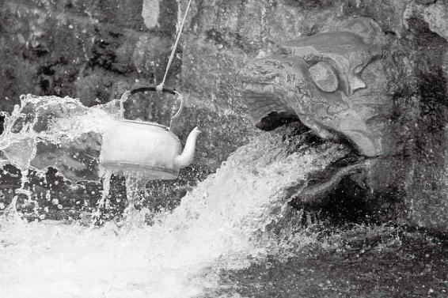

一个人只有曾经经历了很多事情，看过无数的曾经沧海之后达到的“定”，才算是真定。
如果一个人连女朋友也没交过，却说自己对女人没兴趣，那说明他有问题。
一个健康的人除了自己活得舒服以外，还会让跟他接触的人同样感到舒服。
一个德全的人，或者一个身心健康的人，是内求的人。他不会借助于外力，对别人的行为没有仇恨的感觉，也不期望别人给他什么，因此他不会怨。
家里没有内鬼，招不来外贼。只有内心有那种自我厌恶、自我仇恨的因子，别人才能伤到你。
经文：
是以嗜欲不能劳其目，淫邪不能惑其心，愚智贤不肖，不惧于物，故合于道。所以能年皆度百岁而动作不衰者，以其德全不危也。
“嗜欲不能劳其目”
梁冬：下面我们要讲“嗜欲不能劳其目，淫邪不能惑其心”。请问徐老师，什么叫做“嗜欲不能劳其目”？
徐文兵：“嗜欲不能劳其目，淫邪不能惑其心”其实是对“上古天真论”第一段的一个总结。这句话的由头就是黄帝问岐伯说余闻上古之人春秋皆度百岁，可为什么现在的人不到五十岁就动作皆衰了。学生的这么一个问题，引出了岐伯的一大段论述，最后以这句话做了一个总结。
我们看到黄帝问岐伯时只关注到了表面的东西，一是寿命短，就是“半百”；另外就是看到了肉体的功能衰退，就是“动作皆衰”。可是岐伯不仅回答了寿命的问题，提出尽其天年是一百二十岁，还特别强调了一点，就是人要活得愉悦，所以他提到了“各从其欲，皆得所愿”。也就是说岐伯不仅关注到了生命的量的问题，还关注到了生命的质，就算活了一百二十岁，如果自己的欲望满足不了，心愿实现不了，总是很压抑、很扭曲，那么你就会痛不欲生，活着不如死掉。
就算活了一百二十岁，如果自己的欲望满足不了，心愿实现不了，总是很压抑、很扭曲，那么你就会痛不欲生，活着不如死掉。
所以我们看到有些国家统计说自己国民人均寿命都快八十岁了，活得很长，但同时另外一个统计结果表明这个国家的自杀率也是全世界第一。
梁冬：您说的是日本吧？
徐文兵：我可没提。这两个数据结合起来一看，就可以知道这个国家的人是世界上活得最长且最痛苦的，那这么活着又有什么意思呢？
所以岐伯最后讲到，除了“美其食，任其服，乐其俗”之外，还要消除互相攀比造成的不平衡、嫉妒的心理，追求朴实、自然的生活。
梁冬：讲完了我们所说的满足口腹之欲的享受和精神享受以后，黄帝的老师又在最后总结时给我们如下叮咛：“嗜欲不能劳其目，淫邪不能惑其心。”
徐文兵：这里我们再把这个“欲”重新认识一下，很多人活得短命或者活得很痛苦，最根本的原因在于没有认真对待自己的“欲”。我们讲了，“欲”不带心，指的是感观的享受和满足，渴了想喝，饥了想吃，还有就是性欲。也有的朋友问我为什么说性欲不动心，我举个例子，男性看到异性，多看一眼可能会有些生理反应，但这并不代表他就对她动情了，也并不代表他爱上她了。
很多人活得短命或者活得很痛苦，最根本的原因在于没有认真对待自己的“欲”。
梁冬：在这一点上，男性和女性有区别吗？
徐文兵：没有。
梁冬：以前我们有种误解，认为只有男人才是用下半身思考的，其实女性的这种欲望只是被压抑了而已。
以前我们有种误解，认为只有男人才是用下半身思考的，其实女性的这种欲望只是被压抑了而已。
徐文兵：是的，她表达得比较含蓄。我们平常说的“情”和“欲”两个字是不一样的，“欲”是一种生理感观的满足，“情”却代表精神上的感受。你看那个“欲”怎么写？一个“谷”一个“欠”，山谷挖下去需要填满填平，“欲”是渴望被充实、满足。
很多女人想考验一下男人对自己到底是只有肉体的欲望还是真的动了情，却不知道怎么办。告诉大家一个简单的办法，就是性爱活动以后，看看男人是倒头呼呼大睡了，还是跟自己有交流。如果他转身倒头就睡，就说明他只是为了满足生理欲望。
生理欲望的满足和内心的那种需要是两个概念，我们不要放纵也不要压抑它。很多人压抑这种欲望，结果就导致自己心理变态。它不会被你压住，它会从另外一种渠道表现出来。
比如，一个人被饿了好多天以后，会出现什么情况？他会走两个极端，一个叫饥不择食，逮什么都吃，就是饿疯了。
梁冬：好像《甲方乙方》里面就有这样的情节，是吧？
徐文兵：哎，对了，你看那人把他们村鸡全给吃了。
梁冬：变黄鼠狼了。
徐文兵：另一个极端就是吃个不停。当年中缅战争，逃出来的将士们到了延山，之后回国，饿了许久之后突然有饭吃，好多人就吃得撑死了。这就是饥饿的欲望被压制以后出现的一种变态反应。
梁冬：以前自然灾害的时候，人们连观音土都吃。
徐文兵：吃观音土只是为了充饥，暂时把肚子填满了，但是并没有吃到生理上需要的东西，结果就还是饿。我们看到很多小孩子有异食癖，抠着墙土吃，挖上泥土吃，还有的孩子抠自己的鼻屎吃。这都是被压抑、没被满足的欲望从另外一种变态的角度表现了出来。
还有一种常见的被压制的性的欲望，它最后会通过一些其他的奇奇怪怪的事情表现出来。比如，有人有恋物癖，本来男女之间的欲望是正常的，但他被压抑以后就变态了，变得对女人没有感觉了，反而对女人穿的衣服有感觉，疯狂地偷人家的内衣，收藏别人的这些东西。有的人有恋物癖，有的人有恋兽癖，还有的人有偷窥癖。
被压抑、没被满足的欲望会从另外一种变态的角度表现出来。
梁冬：这都是非常不健康的。
徐文兵：都是变态的，是欲望被过分压制以后出现的变态，这就叫什么？嗜欲。“嗜”是什么？过分地喜好，或者说是特殊的喜好。我们知道有“嗜烟”“嗜酒”，还有的人上升到更加变态的“嗜血”，只有杀人、虐待别人，他才有快感。
古代有个故事叫“嗜痂成癖”，是说有个人很变态，身上有创伤化脓结了个痂，他把这个肉袼褙揭下来吃，并且很爱吃。他的被压制或者被扭曲的欲望，就通过这种病态的行为或心理表现了出来。
“嗜欲不能劳”后面为什么要加个“其目”呢？就是说本来“欲”是不动心的，但是变成了一种特殊的喜好以后，就开始动心动神了。眼睛是心灵的窗户，当一个人看到一样特别喜欢的东西时，就会兴奋，瞳孔会散大，那种状态就叫出神。所以过分放纵自己的欲望，眼睛就会过劳，然后出神。我们说养神怎么养？
当一个人看到一样特别喜欢的东西时，就会兴奋，瞳孔会散大，那种状态就叫出神。
梁冬：闭目养神。眼巴巴直勾勾地盯着一个东西看个没完，会出神。所以“嗜欲不能劳其目”的意思就是说不能纵欲，不能让你的神从眼睛里跑掉了。
徐文兵：这句话对我们现代人有极其重大的现实意义，你看现代人都在做什么事？看电视。比看电视更糟的是看电脑，上网或者打游戏。那些一直盯着电视、电脑屏幕的人，其实都处于一种半疯的状态。
那些一直盯着电视、电脑屏幕的人，其实都处于一种半疯的状态。
梁冬：出神状态。所以就“劳其目”了。
徐文兵：“劳其目”之后就是“伤其神”。你看现在很多网络成瘾的孩子，整天泡在游戏厅、网吧里不回家，干嘛呢？打游戏。家长真是太痛苦了，好不容易把孩子供上大学了，一看，孩子各门功课全亮红灯，为啥呢？成天在学校边的网吧里泡着呢。
梁冬：据说很多投资者给网络游戏公司的PE值估值都不是很高，原因就在于他们认为，网络游戏这种生意，在某种程度上是不太符合我们现实生活中的人伦的。
“淫邪不能惑其心”
梁冬：下面我们讲“淫邪不能惑其心”，何谓“淫邪”？为什么“淫邪”又不能“惑其心”了呢？
徐文兵：先讲一下这个“淫”，它本来的意思是过分。
梁冬：“淫雨霏霏”。
徐文兵：《岳阳楼记》里写：“若夫淫雨霏霏，连月不开。”就是说雨下个没完。中医把这个过度、过多的外界气候的变化叫做“六淫”，包括风、寒、暑、湿、燥、火。
“六淫”，包括风、寒、暑、湿、燥、火。
梁冬：也就是说风、寒、暑、湿、燥、火并没有什么问题，只有它们太过了才叫六淫，对不对？
徐文兵：对，不是说刮风、下雨就会致病，而是外界的气候变化太剧烈，你自身的抵抗能力太差，这样才会得病。后来这个“淫”专指性生活过度。
并非刮风、下雨就会致病，而是外界气候变化太剧烈，你自身的抵抗能力太差，这样才会得病。
下面讲“惑”，“惑”是什么意思？
梁冬：你看“惑”上面是个“或”字，下面是个“心”。四十不惑，人到了这个年纪就不会说既可以这样也可以那样了。
徐文兵：没错，其实“惑其心”用老百姓的大俗话来说叫“挑花眼了”。“惑”的意思是不确定，孔子说“四十不惑”，就是讲40岁以前人心不定，自我认知也不清晰。比如，不清楚自己是个什么样的人，适合做什么事情，将来到底要做什么，天赋的使命是什么等；或者也没定下来娶谁，看这个女人也不错那个女人也不错，心里想的是再挑挑吧，再看看吧。这些都叫“惑”。
40岁以前人心不定，自我认知也不清晰。
过了四十就“不惑”了，清楚自己是个什么人，该吃哪碗饭，能吃几碗干饭，都已经定下来了，也明白自己该找什么样的女人，懂得弱水三千独取一瓢饮，别人连看都不看一眼。
梁冬：主要身体也不支了嘛。
徐文兵：也不见得是不支，身体如果不支了就应该是对谁都力不从心了，但这种“定”是指彻底定下来了，尽管还有精神气血能量，但也不会乱洒花露水了。
只钟情或定性于一个人，其实是一个人的身心健康到了一定层次的体现。古代有句话叫“泰山崩于后，麋鹿嬉于前”，我心定了，所有这些乱七八糟的引诱或者不确定的东西都不会让我动心。
只钟情或定性于一个人，其实是一个人的身心健康到了一定层次的体现。
梁冬：“泰山崩于后”我知道，什么叫“麋鹿嬉于前”？
徐文兵：“麋鹿嬉于前”就是说，那种特别漂亮的梅花鹿在面前欢蹦乱跳、打闹嬉戏，我却对它不扫一眼，不动心。我们经常说的“疑惑”“诱惑”，都是让你产生不确定结果的一种原因。“疑”是不大相信或是相信它的负面，“诱”是一种吸引力，面对它们不动心，很坚定，这才叫“不惑”。
只有心定了，那些诱惑或引诱才不过是过眼云烟。
所以“淫邪不能惑其心”，是在“欲”的层次上谈到精神、心理的方面，也就是说花样百出的东西或者性方面的诱惑，已经不足以让我动心了。
梁冬：这是不是有一个前提？就是说在不动心之前，你还得见过不同的东西。你看释迦牟尼为什么能成佛，因为人家一出世就是王子，已经阅尽世间百态。你看为什么现在演艺界很多人都皈依或者是有这种精神追求啊，肯定是之前太折腾了。
为什么现在演艺界很多人都皈依或者是有这种精神追求啊，肯定是之前太折腾了。
徐文兵：放下屠刀，立地成佛。这个人如果没有拿起屠刀就让他直接成佛，那他也成不了。我个人也认同你这个观点，一个人只有曾经经历了很多事情，看过无数的曾经沧海之后达到的“定”，才算是真定。如果一个人连女朋友也没交过，却说自己对女人没兴趣，那说明他有问题。
一个人只有曾经经历了很多事情，看过无数的曾经沧海之后达到的“定”，才算是真定。
梁冬：那就只有两种情况：一种是真的天生就没有这样的能力，这样的应该极少；另外一种就是吃不到葡萄说葡萄酸。
徐文兵：经历了“欲”以后达到大彻大悟大定境界的人，身心健康已经上升到了一个更高的层次，这就叫“淫邪不能惑其心”。有强迫症的人常常反复考虑，前思后想左思右想最后却拿不定主意，他在很多问题上常表现为“惑”，定不下来，这是身心两方面都不健康的表现。
如果一个人连女朋友也没交过，却说自己对女人没兴趣，那说明他有问题。
梁冬：这是不是就是所谓的患得患失啊？
徐文兵：患得患失、瞻前顾后，都是“惑”。
梁冬：我以前以为这种情况只属于某一种人，经您这么一说，我想可能每一个人都有类似的情况。
徐文兵：经历过这一阶段后跳出来的人就达到了一种“定”。跳不出来的人可能一辈子都“惑”，别说40岁了，可能他到80岁了还“惑”。
“愚智贤”
梁冬：接下来讲“愚、智、贤，不肖、不惧于物”这句话中的“愚、智、贤”。
徐文兵：这句话应该这么说，就是说“愚”“智”“贤”这三种人，“不肖、不惧于物”。什么意思呢？就是我们每个人与生俱来的素质都不一样。先说一下“愚”，有一个成语叫“向隅而泣”，就是一个人偷偷地躲在墙角里，背对着人面朝那个墙角哭泣。
梁冬：我在幼儿园中班的时候就干过这种事。
徐文兵：呵呵，没想到你也曾“向隅而泣”。所以这个“愚”是什么呢？就是心思、心情或者想法陷在一个角落里出不来，想不开而钻牛角尖，也就是思维一根筋。
“愚”就是心思、心情或者想法陷在一个角落里出不来，想不开而钻牛角尖，也就是思维一根筋。
“智”是比较聪明、通达的人，知道有形的物质的变化，他们比“愚”的人要开放通达一些。《黄帝内经》在后面的章节里讲到，当人的肾精和元气能够通达到我们的七窍或者九窍的时候，这人就叫“智”。我们常常说一个人聪明，“聪”是指耳朵听得很清楚，“明”是眼睛很明亮看得清楚，耳聪目明，这也叫“智”。
“智”者是比较聪明、通达的人，知道有形的物质的变化，他们比“愚”的人要开放通达一些。
在《愚公移山》里，愚公的对立面智叟（一个聪明的老头），来劝他别挖这个山了，但是愚公就是一个著名的一根筋，他坚持两个观点，一个是子子孙孙无穷匮，另一个是山不加高，所以他认为移这个山没问题。但愚公没考虑到这样几个问题：第一，一个人是有可能断子绝孙的，你怎么就能保证自己子子孙孙无穷匮？张仲景这样一位名医，家族里还也有很多人因为伤寒死掉呢。第二，我们知道青藏高原、喜马拉雅山都是在印度板块冲击下不断隆起的，你怎么就能保证王屋山不加高？

钻牛角尖、思维一根筋的人就是“愚”。
梁冬：愚公是古代阿甘。
徐文兵：他这种人就是不撞南墙不回头，撞了南墙还说因为我的头还不够硬，还要撞，这是“愚”的人。
“智”的人就比较开通，不钻牛角尖，知道还有其他路可以走。“贤”比这个“智”层次要更高一点，就是我们讲的开了慧的人。有些人只能研究看得见摸得着的东西，这叫“智”而非“慧”。就好像现在一些科学家讨论中医，总讲究实证，没有实证就认为中医是假的，他们根本没有高度抽象的思维能力，因而就只能称为“智”者而非“慧”者。
“贤”人比“智”者层次要更高一点，就是我们讲的开了慧的人。
通常我们下棋，摸得着棋子，看得见棋盘，才能下。而那些开了慧的人怎么下呢？下盲棋，没有棋子没有棋盘他们也能下，而且一步不差；更高级别的大师可以一个人对几百个人，一步不乱，这就叫“贤”人。这里讲了愚人、智人、贤人，当然以后还会讲另外三个，叫圣人、智人、真人，那就是更开慧的人了。
“不肖，不惧于物，故合于道”
徐文兵：不管是愚人、智人还是贤人，都“嗜欲不能劳其目，淫邪不能惑其心”，最后能达到一个什么状态？“不肖，不惧于物”。分开说，首先是“不肖于物”，其次是“不惧于物”。
梁冬：什么叫“肖”呢？
徐文兵：意思是相像。
梁冬：惟妙惟肖。
徐文兵：“惟妙惟肖”我们经常用，比如说这个人形似，我们叫“惟肖”；神似，叫“惟妙”，妙不可言嘛。但是“不肖不惧”的这个“肖”在这里不能这样解，而是一个通假字，通“屑”。“不肖于物”本意是“不屑于物”，也就是对物质、物欲的追求不是很强烈，不会把它们看得很重。下面是“不惧于物”，什么叫“惧”？
“不肖于物”本意是“不屑于物”，也就是对物质、物欲的追求不是很强烈，不会把它们看得很重。
梁冬：惧怕。
徐文兵：“惧”不是怕。“惧”有恐惧、惊惧，也有惧怕，但是你不能说它就是“怕”，是“恐”，是“惊”。
梁冬：“惧”和“怕”有什么区别？
徐文兵：惧的繁体字是“懼”。我们可以观察鸟，它在那儿一停下来，头就在来回看，眼睛瞪得大大的，那种状态叫“惧”。“惧”是一种受到了例如惊、吓、恐刺激以后表现出的那种目瞪口呆，或者是双目圆睁的状态。反正就是触动你了，让你双眼迷离或者眼睛瞪大。你惊喜、惊吓，或者害怕了，都可能会惧。
“惧”是一种受到了一种例如惊、吓、恐刺激以后表现出的那种目瞪口呆，或者是双目圆睁的状态。
梁冬：你看那个选秀节目宣布结果之前，那些女粉丝的样子，嘴张着，眼睛看着，就是那个状态。
徐文兵：所以惧是指受到刺激以后眼睛睁得大大的那个状态，“懼”中有一个“忄”，就是说能触动你的心，让你有动心的感觉。
我们额外再说一句，我们经常说恐惧，其实恐和惧完全不一样。恐是什么意思呢？现在老说反恐，恐怖分子，恐的其实是心，“恐”的上边一个“巩”，巩是什么意思啊？是指拿绳子捆东西，以前专门拿的是那种叫做“韦”的牛皮绳。
巩是指拿绳子捆东西。
梁冬：韦编三绝。
徐文兵：什么叫“韦编三绝”呢？以前的书都是竹简，将竹简穿起来的牛皮绳就叫“韦”。孔子读《易经》，来来回回地翻看，结果拴《易经》的那个牛皮绳都断了三回，这就是“韦编三绝”。
将竹简穿起来的牛皮绳就叫“韦”。
以前少数民族有一种执行死刑的方法，就是先将牛皮绳用水浸湿了，然后勒在人的脖子上，这牛皮绳干了以后就开始抽紧，这样就活活把人给勒死了。所以，“恐”就是你的心好像被绳子勒紧了，提溜起来的那种感觉。
“恐”就是你的心好像被绳子勒紧了，提溜起来的那种感觉。
我们说“心都提嗓子眼里了”，或者有人感觉“心里面被人抓了一下，抽紧了”，还有人突然一下就觉得自己像心梗发作要死了等等，这些状态都叫“恐”。我们讲“恐惧”，“惧”是初级阶段，“恐”就更深了。
梁冬：所以您刚才讲的“愚、智、贤，不肖、不惧于物”，就是说不管是像愚公那样一根筋的人，还是比较聪明或是贤达的人，都是既不屑于物，又不惧于物的。
我们需要物，但是不要让这些东西过分地纠缠于你的内心，也不是要你就要把心拴在这些东西上。
徐文兵：对。我们离不开物，生活在这个物的社会里，我们需要住房、开车、穿衣、吃饭。我们需要它们，但是不要让这些东西过分地纠缠于你的内心，也不是要你把心拴在这些东西上。很多人丢了手机好几天都吃不下饭，这叫屑于物。还有很多人就是因为物的问题深深影响到自己的内心。这些都需要一个历练的过程。
记得1990年时，我刚毕业，那会儿在东直门医院工作，那时候一个月工资也就七八十块钱，一个月奖金十块钱。有一次我去买鱼，那个小贩特别坏，我买鱼花了五块五，给他五十块，他先找我四块五，然后我扭身就走了，忘了另外的四十块钱他还没找给我。等我想起来再回去跟他要的时候，他死也不承认了。我为此一星期没吃好饭，因为四十块钱对我来讲就是半个月工资啊！现在想想，那时候一条鱼，那点钱，让自己的内心受到那么深的影响实在不值得。现在别说丢了五十块钱，就算丢上五百块，我眼都不眨，心里也不想，为什么呢？因为这个事我经历过了，经历过以后就跟打了免疫针一样，有免疫力了。
梁冬：所以，我常常劝那些读大学的朋友，有空谈谈恋爱，否则等你工作的时候，还要耗心耗神去对抗恋爱中的思念、揪心、惧、恐，真是相当影响工作。
徐文兵：顺其自然。也有在大学谈恋爱谈得跳楼的，这个要把握个度，不谈不对，谈了没把握好导致失魂落魄也不行。恋爱时，如果你把心神寄托在一个人身上，那么当有一天你失去了他（她），就会吃不香，睡不好，最后瘦得跟杆似的，甚至影响学习。这就叫什么？过屑于物最后惧于物。
该不该在大学谈恋爱要顺其自然。恋爱时，如果你把心神寄托在一个人身上，那么当有一天你失去了他，就会吃不香，睡不好，最后瘦得跟杆似的，甚至影响学习。
梁冬：“愚、智、贤，不肖、不惧于物，故合于道。”
徐文兵：这个“合于道”的意思与“天人合一”相同。天地变化叫“道”，所谓“合于道”就是说你的所作所为符合天地自然的变化。
“合于道”就是说你的所作所为符合天地自然的变化。
“天人合一”是道家养生的最高境界，如果你按岐伯讲的这套方法去做的话，就能合于天道，既长寿又健康，而且活得很愉快。
梁冬：我们举例来说，如果你是一个汽车的零件，却不跟上轮胎的节奏，你想想看是你损伤还是车损伤？
徐文兵：两败俱伤。天还可能没事，但是人肯定不行了。
梁冬：因为车还跟轮胎不一样。我们在这天地之间实在是太小太小了。
徐文兵：现在人连一种起码的健康状态都达不到，更何况古人讲的真正天人合一的状态，那是一种妙不可言的境界。
现在人连一种起码的健康状态都达不到，更何况古人讲的真正天人合一的状态，那是一种妙不可言的境界。
天地的各种变化，气象万千，你的内心就感觉像和谐共振，天地的振动到了你这儿，你就把自己像个收音机一样的身体，调到那个波段，哗一下，那个美妙的音乐出来了。
真正开慧不是靠读书，而是靠脑子里本身所固有的东西。
所以真正开慧不是靠读书，而是靠脑子里本身所固有的东西。你修炼到精通了以后，天地的变化就好像电磁波一样，啪一下，就接通了！有人称这叫“慧然独悟”。你看六祖慧能是不识字的吧？为什么他能成为一代宗师呢？就是因为人家修炼到了这种“故合于道”的境界，然后在某年某月某个时刻突然一下开悟开窍，于是天底下的学问就全知道了。
你修炼到精通了以后，天地的变化就好像电磁波一样，啪一下，就接通了！
梁冬：这就像刚才徐老师讲的，你如果真的能够找对频率的话，那个收音机的音乐自己会来。
“所以能年皆度百岁而动作不衰者”
梁冬：下面这句话叫“所以能年皆度百岁而动作不衰者，以其德全不危也”。我觉得这话不对呀，“所以能年皆度百岁”是什么意思啊？
徐文兵：最后，岐伯老师把回答黄帝的问题来了个总结，上古之人之所以能“年皆度百岁而动作不衰”，为什么？“以其德全不危也”。
梁冬：说到“道德”，“道”和“德”是怎么区分的？
徐文兵：“道”和“德”当然不一样。《道德经》其实应该叫《德道经》，它应该是“德经”在前，“道经”在后。我们经常将“道”和“德”连起来合成一个词，是伦理道德的意思。真正的道和德，各有不同的意思。
“道”，天道，自然变化的规律；“德”，双人旁，底下还有个心，那些用心去体会天道的变化、做事情符合天道的人，我们称之为有德之人。有德者必有所得。得到了这种天道的人，就是岐伯所说的“其知道者”。得道的人的所思所想所作所为叫“有德”；没得天道，甚至违背天道的人的所作所为叫“缺德”。
那些用心去体会天道的变化、做事情符合天道的人，我们称之为有德之人。有德者必有所得。
梁冬：所以有些人说这个人品格高尚，很有道德，有时候我觉得会产生歧义。一个有道德的人不应该很痛苦。我们常常觉得这个人很有道德，其实背后是有一种观点的，就是认为这个人牺牲小我，成就大我，人生过得很痛苦却还要死撑。真正有道德的人其实还是要有智慧的，自己不累，大家也不累，在人群当中都不难受。
真正有道德的人其实还是要有智慧的，自己不累，大家也不累，在人群当中都不难受。
“德全不危”
徐文兵：有没有“智”不重要，重要的是要有“慧”。我们看到很多农村的老头老太太，没读过书，不识字，但说出来的话却极富哲理。他们可能没有“智”，但绝对有“慧”。比如，我们现在很多父母养小孩都采取科学喂养法，根据体重、年龄，按照配方搭配食物喂养孩子。
很多农村的老头老太太，没读过书，不识字，但是说出来的话却极富哲理。
梁冬：跟喂猪一样。
徐文兵：比喂猪要高级得多，但这样喂出来的孩子却个个面黄肌瘦，跟非洲小难民似的。最后爹妈还挺奇怪，我们这么讲科学，他怎么就长成这样了？
农村老太太拉扯孩子没这么多讲究，人家只认准一句话“若要小儿安，三分饥与寒”。她们从来不把孩子肚子塞得满满的，更是从来不把孩子裹得严严实实地放在火炕上，为什么？因为小孩子本身阳气就壮，你把他包裹得很严，他马上就上火，嗓子疼，流鼻血，发烧，再烧得高一点就可能开始抽风。那些老太太不懂什么科学知识，也不知道“饥”不是“饿”，但她们从来不会把孩子饿着，而且每次只让孩子吃七八分饱。这种拉扯孩子的方法是符合天道的，这也叫“德全”。
农村老太太拉扯孩子没有这么多讲究，人家只认准一句话“若要小儿安，三分饥与寒”。
我们现在很多人好像知道很多知识，属于“智者”，但是无道。我们刚才说了，“德”是符合天道的行为；背道或是对天道了解得不太全面，叫“缺德”；不知道天道，叫“无德”。德全，是指除了做的事情符合天道，还要尽可能全面掌握天道，一直做符合天道的事情，这样的话才能“不危”。“德全不危”一句话就概括了我们想养生、想健康、想长寿、想生命活得有质又有量的问题。
“德”是符合天道的行为；背道或是对天道了解得不太全面，叫“缺德”；不知道天道，叫“无德”。
梁冬：说到“德全”，我发现有很多人叫这个名字，比如建国以后的卫生部部长、冯玉祥的夫人就叫李德全。古人起名字很有讲究，出处不是《道德经》就是《诗经》，最起码也是《论语》。所以我们现在取名字还是要有一点出处的，这样显得有点文化。
徐文兵：不过“名”和“字”不一样。
梁冬：“名”和“字”有什么不一样呢？
徐文兵：“名”者“命”也，是说“名”是你生下来父母给你起的，这是你的命，不能选择。
梁冬：你不能选择自己的名。
徐文兵：姓和名都不能选，这是你生下来定的。但是一般上学弱冠以后呢，可以给自己取个字，这个“字”你可以自己定。在古代，只有父辈或者长辈可以指名道姓地叫你，平辈或者晚辈只能称呼你的字以表示尊敬。比如刘备，字玄德，你可以叫玄德先生或者刘玄德，但不能叫刘备，若是叫刘备就是骂人家。诸葛亮，亮是他的名，孔明是他的字，你就只可以叫孔明先生。
姓和名都不能选，这是你生下来定的。但是一般上学弱冠以后呢，可以给自己取个字，这个“字”你可以自己定。
梁冬：诸葛孔明。
徐文兵：诸葛亮可以自称，“亮躬耕垄亩”，自己叫自己没事，别人上来叫“亮”，那就是骂他。现在中国人都有名无字。
在古代，只有父辈或者长辈可以指名道姓地叫你，平辈或者晚辈只能称呼你的字以表示尊敬。
梁冬：你有名字吗？
徐文兵：我有名有字，我的名是我爸给起的，我姓徐，我爸给我起名叫“小周”。
梁冬：哦，徐小周。
徐文兵：这是我的名，你叫我徐小周就是骂我。
梁冬：怪不得我从来没有叫过你徐小周，而是一直以为你叫徐文兵呢。
徐文兵：文兵是我的字，这是我自己取的，因为我是1966年生人，那时候文革开始，我是文化大革命的红小兵。我叫文兵，你叫我徐文兵，就是称呼我的字，或者你也可以叫我文兵大夫。
梁冬：你身份证上写的不是叫徐文兵啊？
徐文兵：就是徐文兵。
梁冬：噢，你后来就把自己的名字改掉了？
徐文兵：没有啊，文兵是我的字，我的名是小周，是我爸给起的。大家叫我的字，称呼我“徐文兵”没问题。
有人问我，这个徐小周和徐文兵是不是兄弟俩？我说不是，是一个人，为什么？因为人是在变的，他在一个状态下是那个人，他过了这个状态则是另外一个人，我们不能拿一个字来或者一个名来概括一个人全身。
人是在变的，他在一个状态下是那个人，他过了这个状态则是另外一个人，我们不能拿一个字来或者一个名来概括一个人全身。
梁冬：对，孔子说“逝者如斯夫”。我们的生命就像河水一样，川流不息。
徐文兵：有的人是以名闻名，有的人是以字闻名，有的人是以号闻名。我建议大家不要改名，那是爹妈给的，改不了，给自己起个字吧。
有的人是以名闻名，有的人是以字闻名，有的人是以号闻名。
梁冬：所以有的时候我们一看那个名，就知道他父母大概是什么水准。
大家不要改名，那是爹妈给的，改不了，给自己起个字吧。
徐文兵：见到一个人，敢问尊姓大名？
梁冬：敢问路在何方？
徐文兵：关于“名”和“字”的传统，现在都丢掉了，但是我们要“乐其俗”，还是要尊崇这种传统风俗习惯背后的莫名能量和信息。不要在那儿弄别的，北京话叫弄那些幺蛾子。
徐文兵：我们接下来说“危”，它是象形字，上面是一个人在悬崖边儿上那个状态，让人一看，悬了，没准要掉下来，所以有一个成语叫“危如累卵”，就好像把鸡蛋一个个摞上了。
梁冬：多形象！
徐文兵：人其实是很脆弱的，我们生而为人真是天大的一件幸事。我是北京中医学院毕业的，我们同学到了大学五年级就开始临床实习，一般都到急诊室，在急诊室实习以后，我们都不约而同地给家里写信，感激父母把我们拉扯这么大，为什么？
人其实是很脆弱的，我们生而为人真是天大的一件幸事。
以前我们认为自己活这么大岁数是天经地义的，在急诊室里面却突然发现，黄泉路上无老少，小到几个月的婴儿、大到青壮年，说死就死了。这个床的病人，几个月之前进来，不久换床，死了，在急诊室里的病人死得更快，我还亲自参加过抢救施光南。
黄泉路上无老少，小到几个月的婴儿、大到青壮年，说死就死了。
梁冬：是不是那个作曲家？
徐文兵：对。他得的是脑疝，就是颅内出血，进急诊室后，一个瞳孔大一个瞳孔小，后来就瞳孔散大，也就是“出神”，神就跑了。在实习的过程中，我们才发现人活着是这么脆弱，这么“危”，所以我们要善待生命，善待心灵，好好养生。而只有“德全”的人才能够处于“不危”的境地。
梁冬：所以大家都应该是“张德全”“李德全”“徐德全”和“梁德全”。
梁冬：上一次我们特别讲到了“德全”，意思就是说能够让我们的德合乎天道。如果一个人品格很高尚，好像总是代表正义，但是总让自己难受也让别人难受的话，那么他充其量还是一个不道德的人。
徐文兵：“道”和“德”意思完全不一样，我们现在说的道德偏于人定的伦理观。其实“道”是指自然变化规律，“德”是指符合天道的行为，所以不要做违反自然的事情，千万别做缺德事，否则你就背德、缺德。
梁冬：不做缺德事，除了不要在背后说同事坏话，领导不要在该涨工资的时候不给别人涨等，还要求我们最好要符合整个自然天地和地球公转、自转的节奏。
徐文兵：其实一个健康的人除了自己活得舒服以外，还会让跟他接触的人同样感到舒服。刚才你举了例子，说有人在背后说别人的坏话，这叫什么？“恨”；还有人说领导不给自己涨工资，这又叫“怨”。“怨”和“恨”都是不健康的心态。
一个健康的人除了自己活得舒服以外，还会让跟他接触的人同样感到舒服。
一个德全的人，或者一个身心健康的人，是内求的人。他不会借助于外力，对别人的行为没有仇恨的感觉，也不期望别人给他什么，因此他不会怨。
一个德全的人，或者一个身心健康的人，是内求的人。他不会借助于外力，对别人的行为没有仇恨的感觉，也不期望别人给他什么，因此他不会怨。
梁冬：所以别人想伤害你也伤害不到。也就是说，如果你被别人伤害了，是因为你本身有能够被伤害的地方。
徐文兵：家里没有内鬼，招不来外贼。只有内心有那种自我厌恶、自我仇恨的因子，别人才能伤到你。
我一般研究的是中国古典的思想文化，但是我曾被一个外国人的演讲打动了。他是美国一个很著名的推销员，做这种“door to door”的“sales”，就是直接敲开你家门卖菜刀的那种，结果他做得非常成功。
他做演讲的时候，很多人问他：“你怎么能够不被别人羞辱呢？”他回答说：“我被人踹出来过、被人拎着脖子扔出来过、被人泼过脏水、被人放出狗咬过，但我从来没被人羞辱过，原因是我不把别人对我做的这些事当成是一种羞辱。你可以在肉体上这么对我，可以打我骂我、把我踢出去、放狗咬我，但是你无法触动我的内心。”
“我被人踹出来过、被人拎着脖子扔出来过、被人泼过脏水、被人放出狗咬过，但我从来没被人羞辱过，原因是我不把别人对我做的这些事当成是一种羞辱。你可以在肉体上这么对我，可以打我骂我、把我踢出去、放狗咬我，但是你无法触动我的内心。”
梁冬：讲得太好了！
徐文兵：高人！
梁冬：所以有些人说美国人不懂中国文化是不对的，其实东西大道是相通的啊。
徐文兵：你说对了，大道是相通的，在这个层次上，很多宗教、哲学最后的归宿是一致的。但是我们也没有必要去抱着美国人的东西不放，我们中国人自己有自己的，没必要去跟别人较劲。